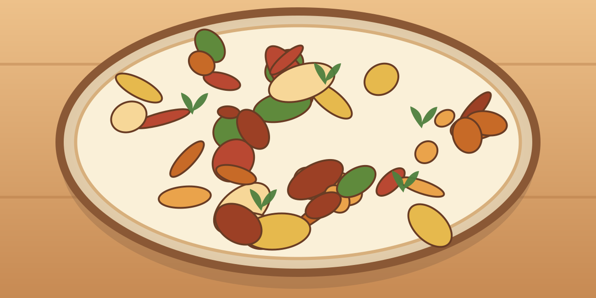

Bowl méditerranéen au poulet
Une grosse portion maison, simple à préparer, avec des légumes et des protéines.
⏱ 25 min🍽 1 grosse portion💰 ≈ 4–6 €💪 ≈ 64 g protéines≈ 800 kcal
Ingrédients
- 200 g de poulet
- 90 g de riz cru
- 100 g de tomate
- 100 g de concombre
- 50 g de feta
- 50 g de salade
- 50 g de yaourt nature
- 1/2 citron
- 5 ml d’huile
- Origan, ail, poivre
Préparation
- Cuire le riz.
- Assaisonner le poulet avec origan et ail, puis le cuire avec l’huile 8 à 10 min.
- Couper tomates, concombre, feta et salade.
- Mélanger yaourt, jus de citron, sel et poivre pour la sauce.
- Mettre riz, poulet et légumes dans un bol ; napper de sauce.
Conservation et réchauffage
Séparer sauce et crudités du poulet/riz ; garder jusqu’à 2 jours au frais.
Nutrition et prix indicatifs : à recalculer selon les marques et quantités dans MyFitnessPal. Les sauces mentionnées sont sans poisson : vérifier les étiquettes.